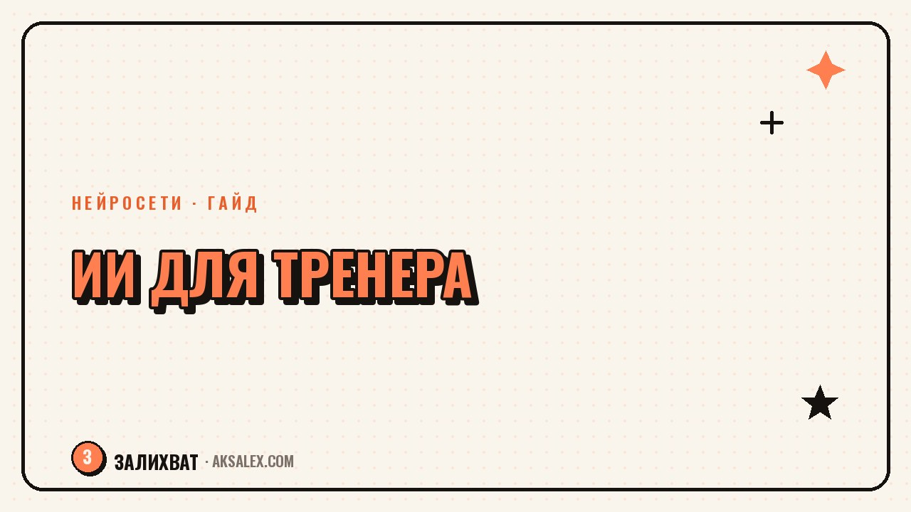

Нейросети для тренера: программы и питание клиентов

Тренер тратит на бумажную работу столько же времени, сколько на зал: составить программу под цель клиента, прикинуть калории, ответить на десятый вопрос про крепатуру, снять рилс для страницы. Нейросети не заменят твой глаз на зале, но разгрузят всё вокруг тренировок - от текста программы до подписи к посту.
Составление программ тренировок
Нейросеть неплохо справляется с черновиком программы, если ты даёшь ей конкретные вводные: цель клиента, уровень подготовки, доступное оборудование, количество тренировок в неделю и ограничения по здоровью. Чем точнее запрос, тем меньше придётся переписывать руками.
Как сформулировать запрос
Хороший запрос: 'Составь программу на 4 недели для женщины 35 лет, цель - похудение и тонус, 3 тренировки в неделю по часу, оборудование - гантели и резинки, травм нет, уровень - начинающая'. Нейросеть выдаст структуру по неделям, но финальную нагрузку ты выставляешь сам.
- ChatGPT - быстрый черновик программы и альтернативные упражнения при противопоказаниях
- Claude - подробные объяснения техники и логики подбора нагрузки
- Gemini - работа с таблицами, если ведёшь базу клиентов в Google Sheets
Нейросеть - ассистент, который делает черновик за пять минут вместо часа. Решение всё равно принимаешь ты, потому что только ты видел, как клиент выполняет упражнение.
Расчёт питания и КБЖУ
Расчёт калорий и баланса белков, жиров и углеводов - рутина, которую нейросеть делает быстро и без ошибок в арифметике. Ты вводишь вес, рост и цель клиента, получаешь базовые цифры, а дальше корректируешь их под прогресс.
Отдельный плюс - меню под бюджет и вкусы клиента. Если человек не ест мясо, нейросеть соберёт варианты из доступных продуктов, а не общий шаблон 'грудка, рис, брокколи'.
На что не стоит полагаться полностью
Нейросеть не знает противопоказаний клиента, если ты их не указал, и не заменяет диетолога при диабете, беременности. Используй расчёты как основу, а серьёзные случаи передавай профильному специалисту.
Контент и соцсети для тренера
Клиенты выбирают тренера не только по сарафанному радио, а по странице в соцсетях. Нейросеть помогает с текстами постов и подписями к видео с техникой упражнений.
- Разбор техники упражнения в формате короткого поста с типичными ошибками
- Серия 'мифы о фитнесе' - список мифов, который ты проверяешь и дополняешь своим опытом
- Шаблон ответа на вопрос 'сколько нужно тренироваться, чтобы похудеть' для директа
Голос тренера важнее красивого текста
Текст от нейросети звучит гладко, но безлико без правок. Добавляй свои фразы-маркеры и случаи из практики - это отличает твою страницу от десятков похожих аккаунтов.
Переписка с клиентами и организация записи
Часть вопросов от клиентов повторяется день в день: когда тренироваться после простуды, что делать при боли в пояснице, можно ли перенести занятие. Нейросеть помогает собрать шаблоны ответов, которые ты адаптируешь под ситуацию. Некоторые тренеры подключают чат-бота для вопросов о цене и расписании.
Сравнение сервисов для тренера
| Сервис | Задача | Особенность | Цена |
|---|---|---|---|
| ChatGPT | Программы, тексты, переписка | Быстрый и универсальный | Бесплатно/от 1700 руб в мес |
| Claude | Подробный разбор техники и логики | Хорошо объясняет нюансы | Бесплатно/от подписки |
| Gemini | Таблицы с базой клиентов | Встроен в Google Sheets | Бесплатно с Google-аккаунтом |
| Notion AI | Программы внутри CRM клиентов | Хранит всё в одном месте | От подписки Notion |
Как встроить нейросети в рабочий день
Начни с одной задачи - расчёта КБЖУ или черновика постов на неделю. Когда привыкнешь формулировать запросы и видеть, где нейросеть ошибается, подключай следующую задачу.
Короткий план на первую неделю
- День 1-2: составь программу для одного клиента и сравни с тем, что сделал бы без нейросети
- День 3-4: собери шаблоны ответов на пять частых вопросов в директе
- День 5-7: напиши с нейросетью три поста и адаптируй их своим голосом
Через неделю станет понятно, какие задачи экономят время. У каждого тренера своя специфика, и под это по-разному настраиваются запросы к нейросети.
Частые вопросы
Может ли нейросеть полностью заменить тренера в составлении программ?
Нет, нейросеть даёт только черновик на основе общих данных. Финальную программу корректирует тренер, который видел, как клиент двигается.
Безопасно ли давать нейросети данные о здоровье клиентов?
Старайся не указывать фамилии и диагнозы в открытых чатах. Используй обезличенные вводные - возраст, пол, уровень подготовки.
Какая нейросеть лучше для расчёта питания?
ChatGPT и Gemini одинаково хорошо считают базовые калории и БЖУ. Gemini удобнее встроить в таблицы, если клиенты уже ведутся в Google Sheets.
Стоит ли полностью доверять нейросети тексты для соцсетей?
Лучше использовать её как черновик. Добавляй примеры из практики и свою манеру речи, иначе текст будет звучать как у любого другого тренера.
С чего начать, если раньше не пользовался нейросетями в работе?
Начни с одной задачи, например расчёта питания для новых клиентов. Когда поймёшь, как формулировать запросы, подключай остальные задачи постепенно.
Раз тема оказалась полезной, вот что почитать следующим. Разбираем, с чего начать блог в Threads: профиль, формат постов, частота и перенос подписчиков.
Читать статью →а не вручную